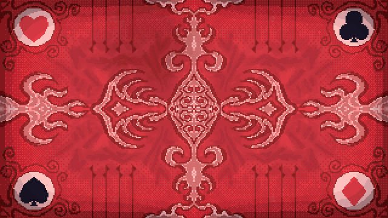

Twelve d6 throws generated from your ten reference frames. Each one is real physics rendered on the same 320×180 pixel grid, and the face that lands up is chosen in advance.

This one recreates your reference: the die is tossed over the top edge, swells toward the lens, tumbles on the bounce and slides to rest showing one pip.
Any motion, any result, any palette. The same seed always gives the same throw, and a new seed gives a new one.
Motions: drop_in, side_left, side_right, bank_shot, high_toss, slam, skid, spinner, pair, scatter3.
Palettes: bone, onyx, gold, jade, royal, ivory_red, amethyst, frost.
cd dice_gen python generate.py --motion drop_in --result 4 --palette onyx --seed 21 python generate.py --motion pair --result 6,6 --palette gold,jade --seed 3 python generate.py --batch --out gallery
Previews are shown on the felt at 2×. The sprite PNGs are transparent, at native 320×180, so they can sit on any background.